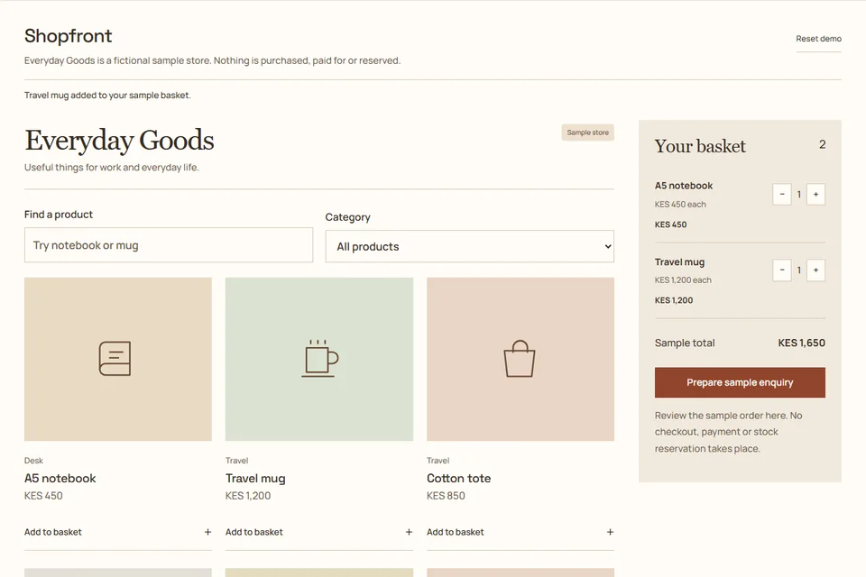

Customers can’t see what you offer.
A clear website puts your services, products and next steps in one place, so people can understand your business before they get in touch.
We build professional websites, AI assistants and practical business systems for businesses across East Africa.
You do not need a technical brief. Start with the part of your business that is hard to find, hard to keep up with or taking too much time.
A clear website puts your services, products and next steps in one place, so people can understand your business before they get in touch.
An assistant built around your approved information can help with routine questions, with clear limits and a handover to a person.
A practical system can bring scattered records together. Automation can reduce repeated entry between the tools you already use.
Start with the job you need done. We agree what is useful before deciding what to build.
Give customers a clear next step.
Websites and marketing shaped around how customers find and choose you.
Spend less time repeating yourself.
Routine questions and repeated tasks, with people handling decisions that need judgement.
Keep business records in view.
Stock, sales and other records, scoped to how you work.
Start with the pages you need now. More involved websites can include service pages, branch information or a product catalogue.
Local review only. These package prices and scopes are provisional and await owner approval. They are not an offer or a quote.
KES 35,000
A clear starting point for a service business.
KES 65,000
More room to explain your services and capture enquiries.
KES 95,000
For a broader offer, branches or a product catalogue.
AI, automation, marketing and custom systems need a scoped quote. Full inclusions, exclusions and optional care would be agreed in a proposal. Timelines, ongoing support and commercial terms remain subject to approval.
A project in development and a storefront concept. These show the direction of the work, not completed client results.
Flagship product
A business-systems project focused on the records behind a trading day. Hosting, security and readiness for real business use still need verification.
Read the project notes

A sample storefront exploring how products and useful details can be presented clearly. It does not take payments or fulfil orders.
Browse the work overviewA useful build begins with a shared understanding of the problem, the scope and what will count as working.
Explain what happens now and what needs to improve. We work out what is useful and what is outside the scope.
Review the work as it develops. Check it against your real workflow before agreeing the next step.
Test the agreed scope, explain how it works and agree ownership, hosting and any support before launch.
The aim is something you can understand, review and use. An AI feature only belongs in the project if it helps with the job.
Focus on how customers reach you and how work gets done, before choosing tools.
Agree what is included, what is excluded and what needs a separate decision.
Label concepts and work in development honestly. Discuss security, delivery and support before real use.
Five guide drafts are in editorial review. They remain unavailable until independently reviewed and approved.
No draft is linked or included in the public sitemap. Editorial approval is still required.
An independent brand in development, based in Kenya. Not yet an incorporated company.
I am the founder of NeuroNest, a small technology company in Kenya. I am not named on this page, and I will explain that choice on a call if you ask.
I spent four years in finance at an internet service provider before I started building AI systems for business.
I am not an engineer. I understand the problem, design the solution, and oversee the build through AI-assisted development, and I sell the part I know: making a business easy to reach, and making its numbers visible.
That means a front door first. Five pages that load on a phone, a number a customer can tap, a price they can see, and a form that reaches a person. We build it, test it on a phone, and put it live in days.
I will decline work that is beyond what I can deliver. When I do, I will tell you in the first conversation.
Founder statement supplied for local review. The call promise and delivery wording still need owner confirmation before publication.
No. Start with the problem, the task that takes too long or the question you cannot easily answer. We can work out a possible scope from there.
Small businesses in Kenya are the starting point. The scope should fit the work you need done. More involved projects need a separate assessment.
A quote follows an agreed scope. The package figures on this local preview are provisional, not approved prices. AI, automation, marketing and custom systems are scoped individually.
No. This website does not currently run a customer AI assistant. An assistant for a business would need approved information, defined limits, tested integrations and human handover.
Me. I build it using AI systems I operate and direct.
Ownership, access, hosting, handover and any optional support need to be agreed in the proposal. This preview does not promise an ongoing support plan.
What do you offer? What is taking too much time? What would you like customers to do more easily? Those are useful starting points for a project conversation.
This is a local website preview. Email, phone and WhatsApp will appear here after ownership, monitoring and reply have been verified.
There is no enquiry form in this preview. Nothing you type is collected or sent.